20 面部下三分之一：颏下凹陷与口角线
面部下三分之一区域：预颏沟和玛丽翁线
NABILA AZIB 和 JANI VAN LOGHEM
20.1 引言
预颏沟（PJS）和玛丽翁线（ML）的形成是骨吸收、组织萎缩以及软组织沿固定皱纹下移共同作用的结果 [1,2]。最初被称为颏下颌沟的区域，随着结构的变化，现已被 Mittleman [3,4] 称为预颏沟。
PJS 填充可以改善下颌缘轮廓，并为该区域和口角提供支撑，从而达到“伪装”掉松弛的下垂脂肪（jowl）。
CaHA 似乎是用于下部面部轮廓塑形和皮肤刺激的首选填充剂。
20.2 解剖学
下嘴角肌（DAO）、下唇肌（DLI）和颏肌（mentalis muscle）均向上与口环肌（orbicularis oris）相连，向下则 DAO 与胸筋膜肌（platysma muscle）相连（图 20.1）。
下颌韧带保持着一个固定点，具有深层的骨性附着和限制颏部前方的皮肤附着。
下颌隔膜沿着下颌骨是上脂肪区和下脂肪区的界限。
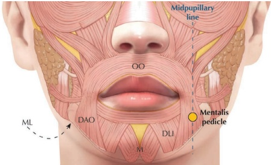
20.3 解剖学危险点
需注意的区域包括颏动脉、静脉和神经。颏孔位于第一前磨牙下方的中鼻沟线上。面动脉仍位于 DAO 肌的后缘（图 20.2）[5]。
20.4 评估与治疗方案
应在静态和动态位姿下，从正面和侧面进行全脸评估。注射应由上至下进行，以达到更好的提升效果。面颊注射可以减轻松弛的下垂脂肪（ptotic jowl）。这样可以在预颏沟区域使用较少的填充剂即可达到自然效果。
随着年龄增长，PJS 会加深，我们可以注意到在中央颏部稍远处的三角形“凹陷”（图 20.3）。
20.5 标记与照片记录
首先应让患者坐直，标记出治疗区域，以考虑重力影响。
预颏区域的体积丢失表现为一个底部位于下颌骨上的三角形。
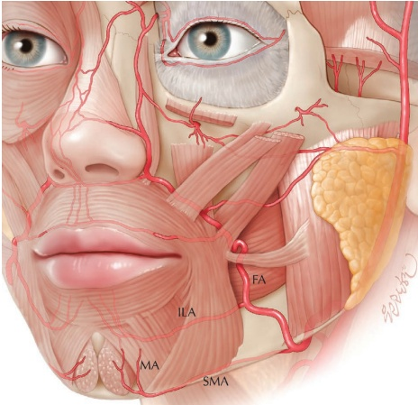
边界。三角区域的后边界可以通过将颊部组织向前推移来精确确定。颊部的最前缘对应于下颌韧带的皮肤附着点。该三角形的顶点可延伸至口角。
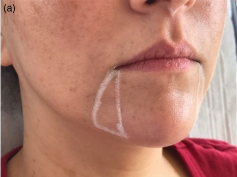
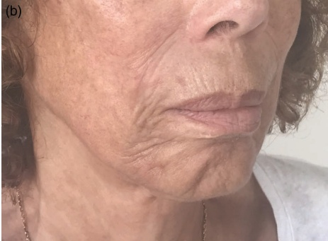
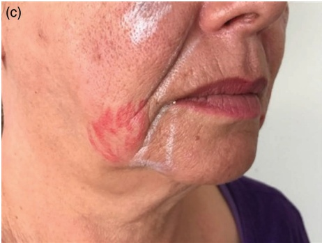
可在标记前后拍摄术前照片。
20.6 颊部沟钝性套管针技术 1 注射点位参考图 20.4。
20.6.1 分步技术
-
识别并标记 PJS（颊部沟），沿下颌线延伸至口角，形成一个三角形区域。
-
在侧颏部标记进入点（图 20.5）。
-
进行消毒。考虑在进入点进行局部麻醉。
-
用 23G 针头制作预孔。
-
使用未稀释的 CaHA 或标准稀释的 CaHA（每 1.5 mL CaHA 配制 0.3 mL 1% 利多卡因和 1:200000 肾上腺素）以及 25G、38 mm 或 50 mm 的钝性套管针。
-
将钝性套管针指向口角方向。
-
确保在整个治疗过程中，没有产品被注射到下颌线和颊部沟的侧方。
-
用非惯用手将皮肤拉向钝性套管针的方向，并将钝性套管针沿真皮-真皮下平面推进至口角。保持在皮下，以避免刺激颏蒂，同时提供提升效果和皮肤生物刺激（图 20.6）。
-
以扇形技术，每侧回行注射约 0.1 mL 的多条线性丝状物向颏部方向注射（图 20.7）。
-
在下颌骨边缘，可能需要多次穿刺才能使 PJS 得到满意改善。
-
用拇指和食指轻柔挤压组织，可将填充物的形状调整以匹配下颌线。
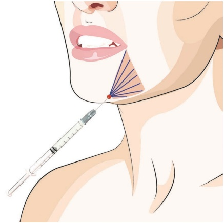
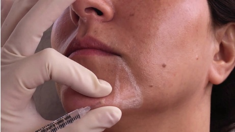
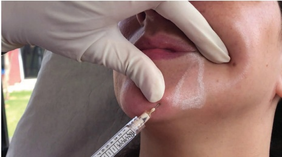
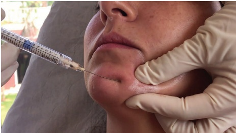
-
当骨吸收较为明显时，还可以在下颌骨的骨膜上添加多个羟基磷灰石钙（CaHA）团注。这种多层体积填充能提供更好的轮廓和持久的效果。
-
不要过度矫正。
-
根据需要用手动按摩进行平滑处理。
20.7 颏沟锐针技术
注射定位，参见图 20.8。
20.7.1 分步技术
-
确定并标记颏沟（PJS）。
-
用一根手指检查口腔腔在下唇后方延伸的深度，并在该点标记皮肤（图 20.9）。
-
从颏沟中央推进针头至骨膜。用非惯用手将皮肤拉起覆盖针头。
-
使针尖轻触骨膜，在注射时确保不注射到口腔黏膜下层，于下颌骨的骨膜上放置两到三个团注（图 20.10）。
-
在不穿出皮肤的情况下撤回针头，并沿皮下平面向上推进（甚至超过深层黏膜层的标记点）。
-
拉伸与针头长度一致的皮肤，以便更好地控制针头的浅层定位。
-
以扇形技术注射多个向远端延伸的线性丝状物（图 20.11）。
-
根据需要塑形以达到平滑效果。
20.8 颏沟钝性套管针技术 2 注射定位，参见图 20.12
20.8.1 分步技术
-
标记颏沟（PJS）和口唇（ML）。消毒。
-
考虑在颏沟入口点使用含有肾上腺素的利多卡因进行麻醉。
-
用 23G 针头制作预孔。
-
使用未稀释的 CaHA 和 25G、38 mm 的钝性套管针。
-
将针头推进皮肤至皮下组织。
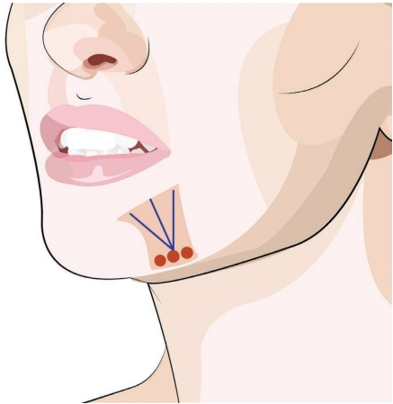
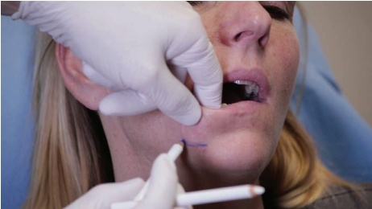
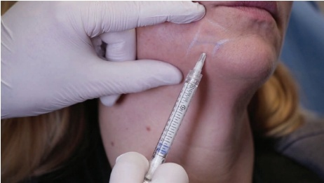
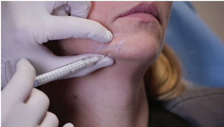
-
将钝性套管针推进至颏部中线（图 20.13）并越过颏下缝合线（PJS）。
-
向 PJS 注射约 0.25 mL 的浓稠的逆行线性丝。
-
重新定向并将钝性套管针推进至颏沟，同时保持在皮下平面（图 20.14）。
-
再向 PJS 注射另一股逆行线性丝。
-
重新定向并推进至最凹陷点，并朝向中口线（ML）方向注射逆行线性丝（图 20.15）。
随后进行轻柔按摩以达到所需的轮廓。用一根手指置于口腔内，拇指放在皮肤上，即可轻松均匀产品。肿胀可能不均匀，但应在一天或两天内消退。应告知患者仅平卧睡眠，并在一周内避免牙科操作。随访计划于 15 天至 3 个月后进行。
- 成型和按摩。
有关结果和应用技术的可视化，请参阅图 20.16。
20.9 术后护理
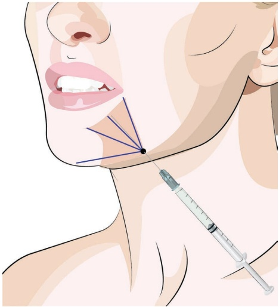
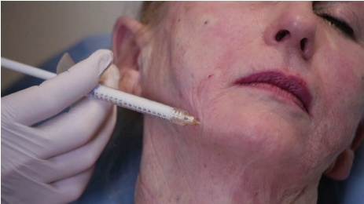
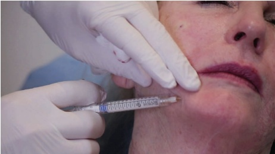
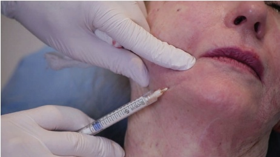
20.10 为达到最佳效果的附加治疗
在处理PJS之前，可以考虑进行提升技术，例如颊部增厚和下颌角增厚。向颊部深层注射CaHA或其他体积填充剂，并向下颌注射CaHA通常可以减轻PJS。此外，颏部增厚在许多情况下可以改善PJS的外观。改善皮肤质量和收紧皮肤（例如通过激光再造等）有助于减轻PJS。最后，脂肪减少疗法，如（激光或可注射的）法令纹区域脂肪溶解，可能具有价值。
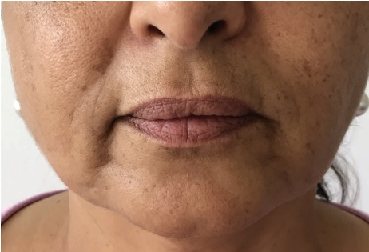
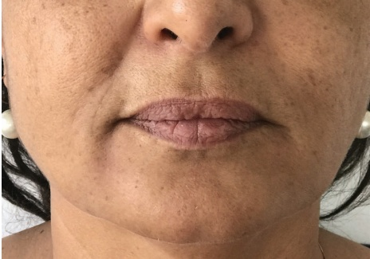
参考文献
[1] R. B. Shaw et al., “Aging of the facial skeleton: Aesthetic implications and rejuvenation strategies,” Plast Reconstr Surg, vol. 127, no. 1, pp. 374–383, 2011.
[2] M. H. Graivier et al., “Calcium hydroxylapatite (Radiesse) for correction of the mid- and lower face: Consensus recommendations,” Plast Reconstr Surg, vol. 120, no. Suppl 6, 2007.
[3] H. Mittelman, “The anatomy of the aging mandible and its importance to facelift surgery,” Facial Plast Surg Clin North Am, vol. 2, no. 3, pp. 301–309, 1994.
[4] T. Fattahi, “The prejowl sulcus: An important consideration in lower face rejuvenation,” J Oral Maxillofac Surg, vol. 66, no. 2, pp. 355–358, 2008.
[5] T. K. Hamilton, “Skin augmentation and correction: The new generation of dermal fillers—a dermatologist’s experience,” Clin Dermatol, vol. 27, no. Suppl 3, 2009.